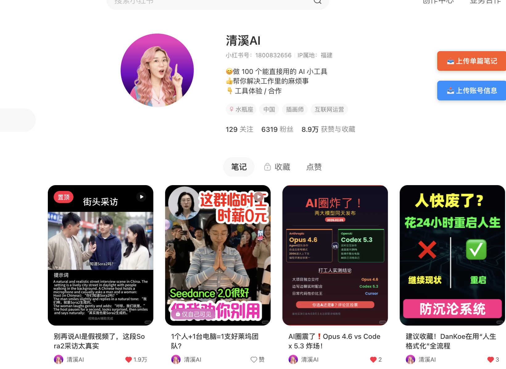
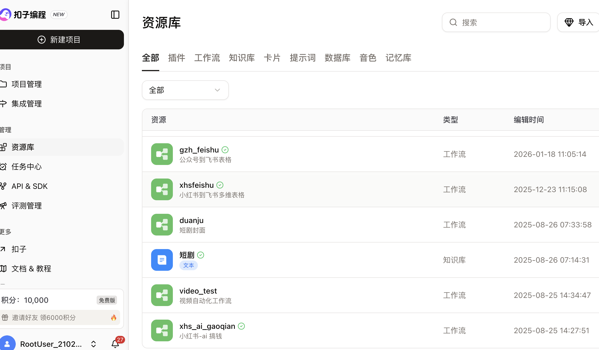
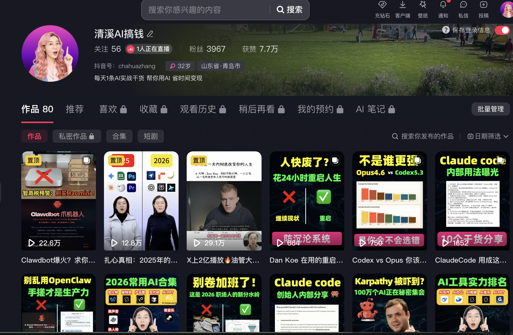
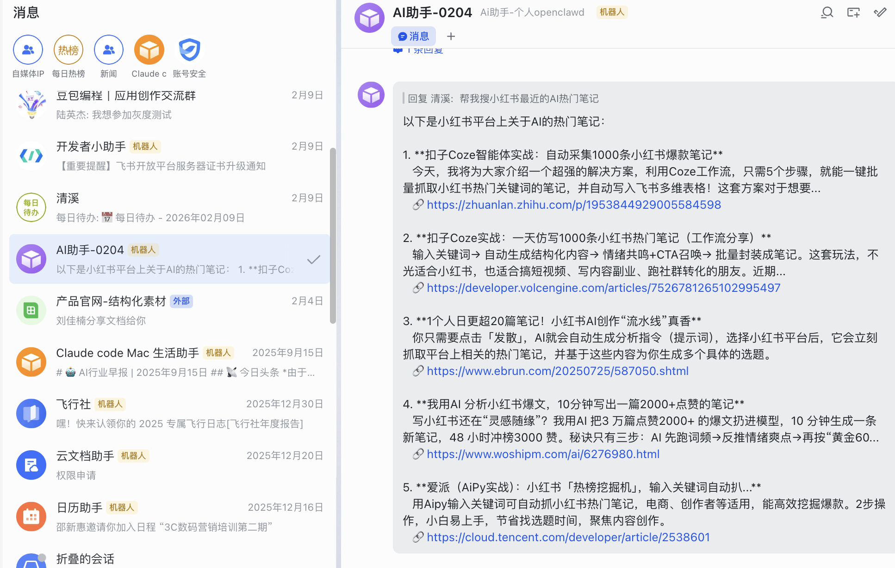
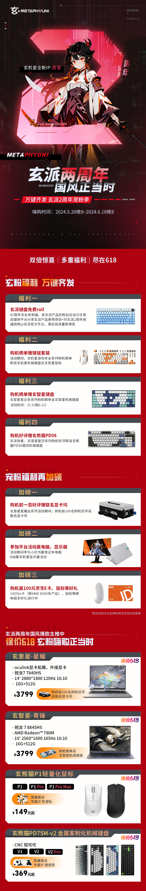
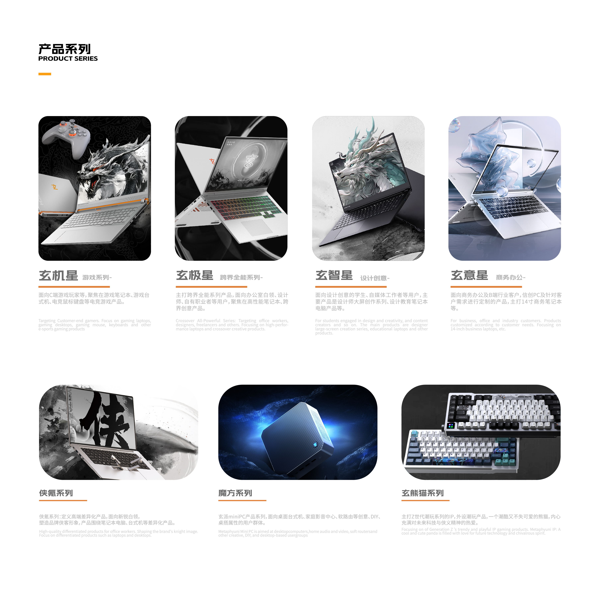

内容能力
能把账号定位、选题、包装、分发和复盘接成闭环，不靠堆量，而靠稳定产出高反馈内容。
AI运营 / 增长负责人 / AIGC内容负责人
10年运营经验，3年AIGC深度实战。能从策略、内容、增长、自动化到复盘闭环独立推进，也能把跨部门协作和项目交付拉到结果导向。




价值定位
能把账号定位、选题、包装、分发和复盘接成闭环，不靠堆量，而靠稳定产出高反馈内容。
不止会用工具，而是能把 Coze、n8n、Claude Code、飞书协同成可复用流程，直接减少人工与协同成本。
能定方向、拆动作、协调设计和外部资源，把“想法”变成可交付项目，而不是只做执行环节。
Featured Cases
只保留最能证明你适合 AI运营 / 管理岗 的 3 类能力：增长、自动化、管理交付。
CASE 01
CASE 02
CASE 03


System
Fit
AI运营负责人、增长负责人、AIGC内容负责人、AI产品运营、内容增长经理。
从 0 到 1 搭矩阵、把 AI 真正接进业务流程、需要增长和内容都能扛的团队。
不是“懂一点 AI 的运营”，而是“能把 AI、内容、增长、协同一起做成结果的人”。